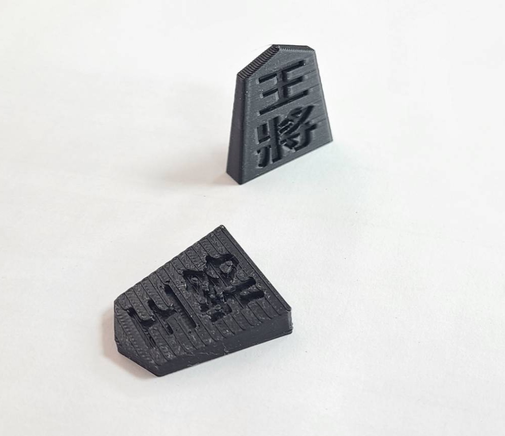
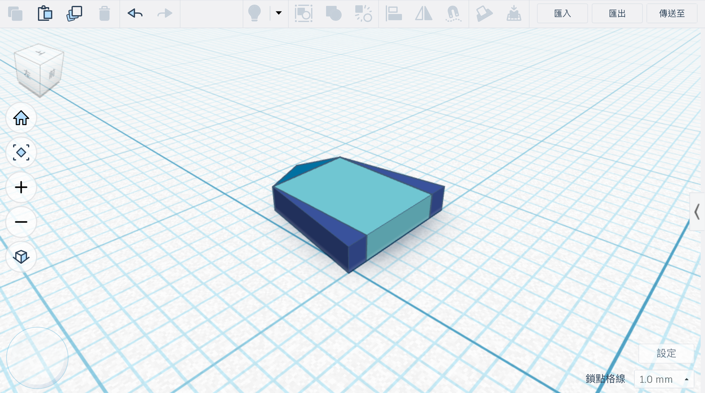
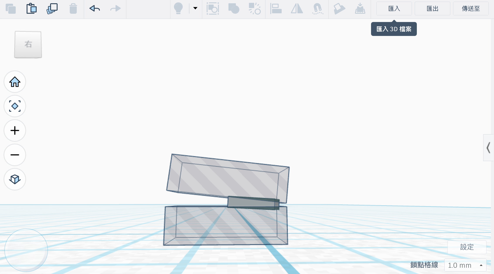
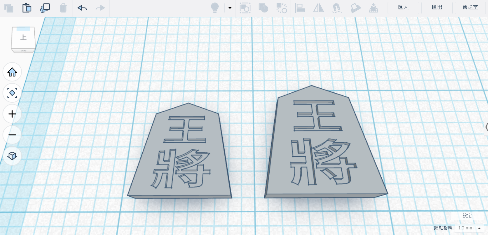
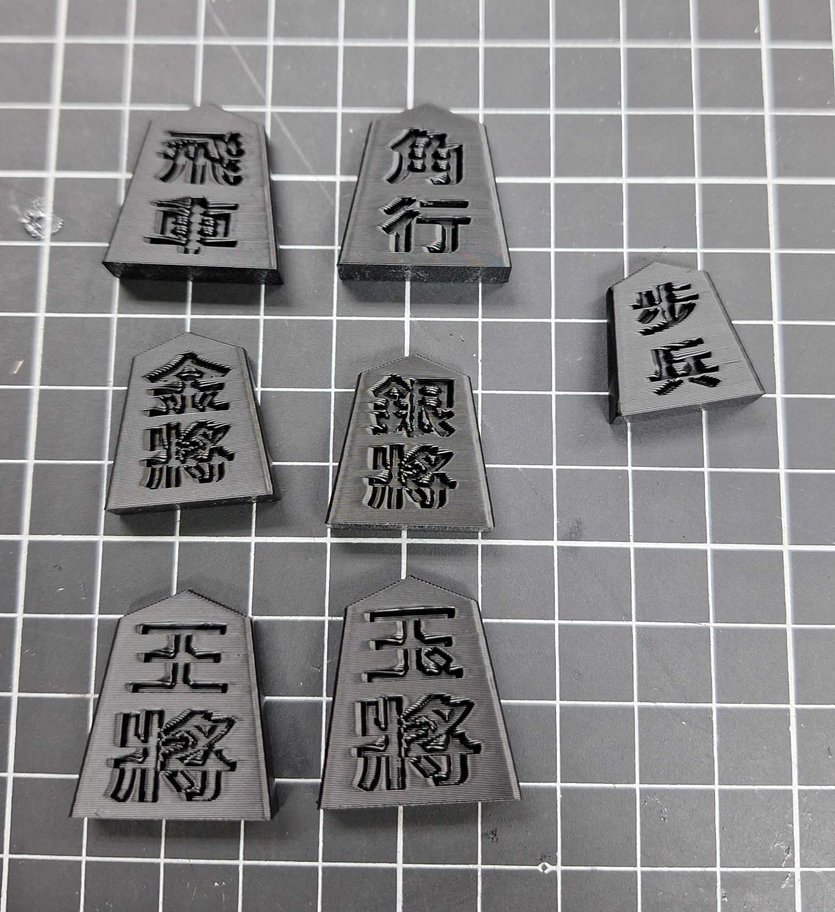
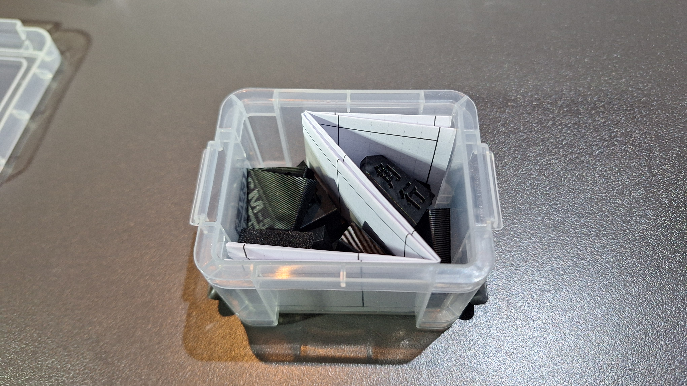
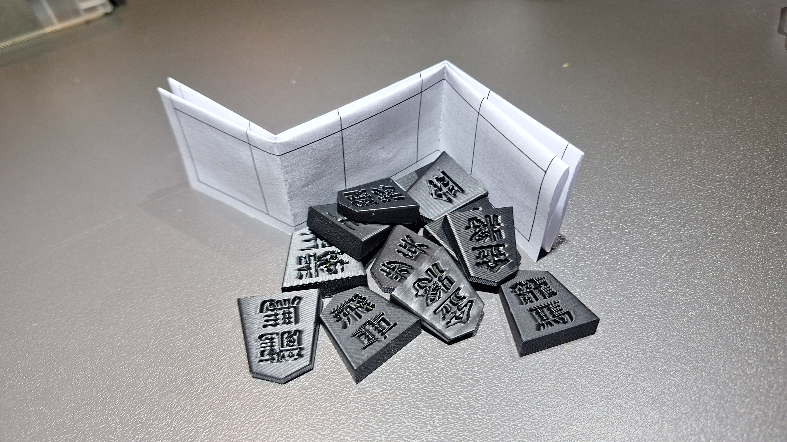
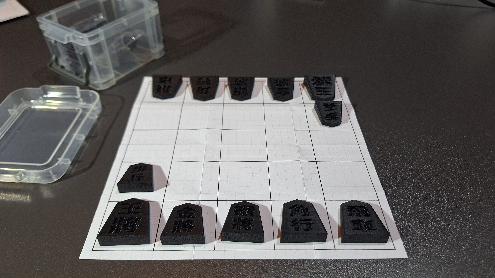

RE:SHOGI
"從使用問題出發，重新設計傳統對弈體驗"
吳承恩 | 工業設計自主學習成果
吳承恩 | 工業設計自主學習成果
思考傳統之外的可能性。針對初學者高頻率使用甚至外出使用的場景，如何平衡價格、耐用與收納的問題，降低進入將棋世界的門檻？
利用 3D 列印的物理特性，將「容易掉漆」的平面印刷改為「永不磨損」的內凹結構，從技術底層解決問題。
針對現代便攜與低成本量產需求，提供一個高品質且能永續使用的「新生解答」。

分析市場現狀：傳統木製昂貴沉重，磁吸塑膠則有嚴重的文字磨損問題。RE:SHOGI 在極低預算內找回完整的對弈樂趣。
昂貴、沉重、且字體表面為印刷極易磨損。這些特質在不經意間，築起了高聳的進入門檻。
普及性高，但文字耐用度極差，對於長期學習者來說並非理想選擇。
運用 3D 列印技術重新設計，大幅降低成本與重量，並透過結構變化解決物理磨損問題。
運用 Tinkercad 進行數位建模，經歷多次尺寸微調與實用測試，確保實體成品在列印後，棋子能達成容易收納且絲滑拿取的操作手感。

組合長方形與三角形，調整角度組成將棋特有的傾斜基座。

透過透明幾何體扣除，定義棋面坡度並嵌入 0.5mm 內凹文字。

按棋子重要性（如王將、飛車）分級縮放，呈現出整體的層次感。

利用 FDM 列印的空間深度產生陰影，取代易掉漆的顏料印刷。
透過變更列印方向（從平躺改為直立），大幅減少接觸面的粗糙感。
便攜性、低成本與高品質的結合

極簡透明收納盒

亮光黑材質確保各種光源皆能清晰辨識文字

完整「五將棋」便攜對弈組